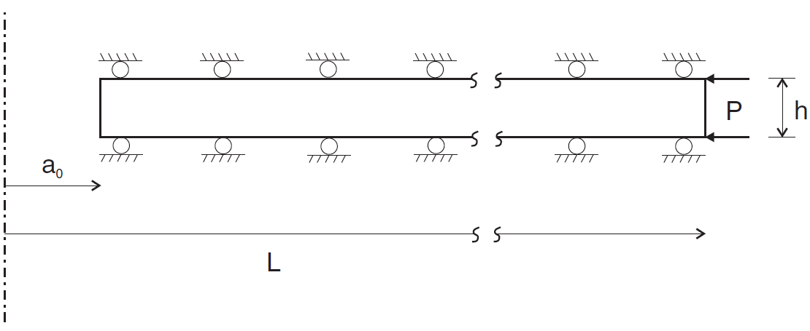
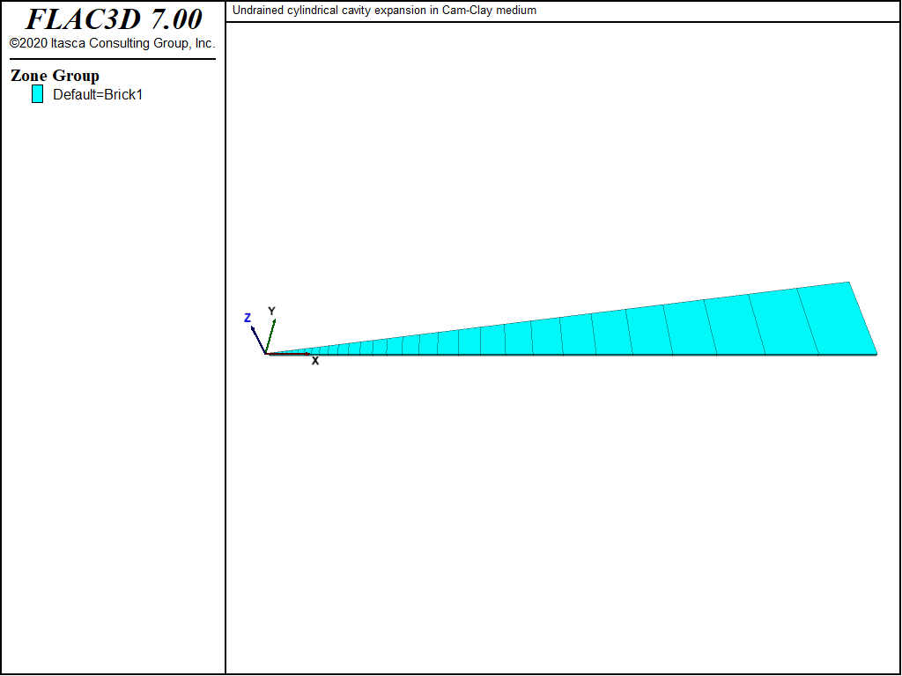
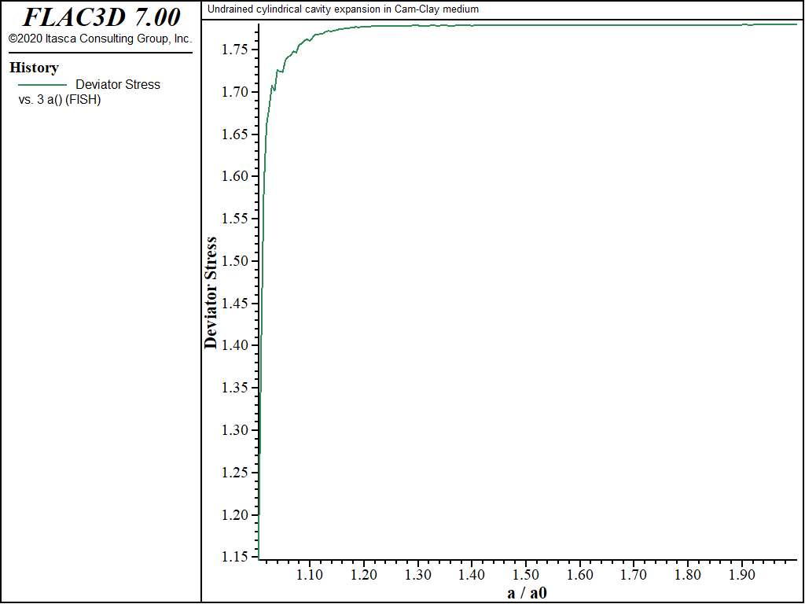
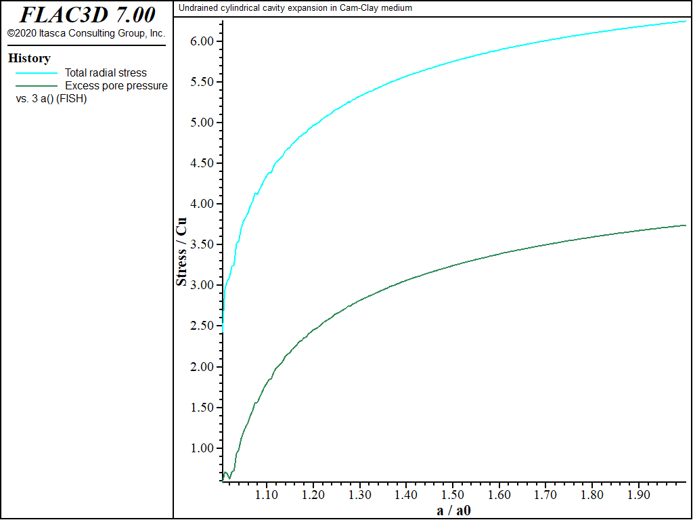
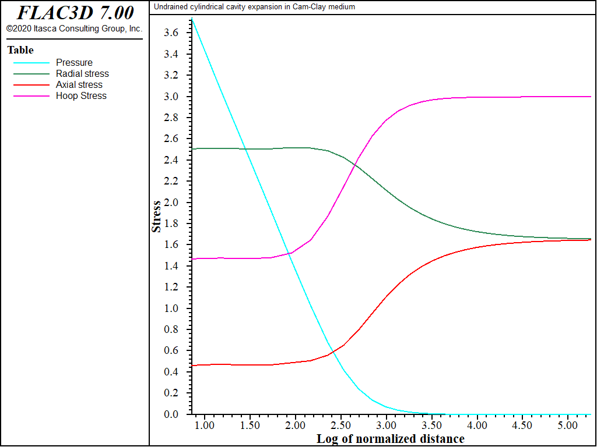

Cam-Clay 介质中的不排水圆柱腔体扩张
问题描述
注意
本示例的项目文件可在 FLAC3D 中查看/运行。[1] 该项目的主数据文件见本示例末尾（main data file）。
采用无限 Cam-clay 介质中的圆柱腔体模型，分析饱和黏土体中旁压仪扩张所引起的应力和孔隙压力变化。未考虑测量装置有限长度的影响。
在试验中，腔体半径 \(a\) 被扩张至其初始尺寸 \(a_0\) 的两倍。该 Cam-clay 材料的性质对应于 Boston Blue Clay，具体如下（Carter 等，1979）：
| 不排水黏聚力（\(C_u\)） | 1 MPa |
| 剪切模量（\(G\)） | 74 × \(C_u\) |
| 土体常数（\(M\)） | 1.2 |
| 正常固结线斜率（λ） | 0.15 |
| 弹性回弹线斜率（κ） | 0.03 |
| 参考压力（\(p_1\)） | \(C_u\) |
| 参考压力下的比容（\(v_λ\)） | 2.3 |
黏土为正常固结，其原位应力为 \(σ'_r\) = \(σ'_θ\) = -1.65 \(C_u\)、\(σ'_z\) = -3 \(C_u\)，初始超孔隙压力 \(u_e\) = 0。假定材料的剪切模量在模拟过程中保持不变。旁压仪膜视为不透水，且流体的体积模量远大于土体，从而可在不排水条件下进行数值模拟。
FLAC3D Model
FLAC3D 模型的建立考虑了问题的轴对称与平面应变特性。所考虑的是一个扇形切片，它相当于四分之一圆的十分之一，高度为 \(h\)（见图 1（Figure 1）中的正视图）。FLAC3D 模型的范围是有限的，但长度 \(L\) 取得比 \(a_0\) 大得多。


图 1：模型几何的正视图。
FLAC3D 网格的尺寸对应无量纲值 \(a_0\)/\(a_0\) = 1、\(L\)/\(a_0\) = 200 和 \(h\)/\(a_0\) = 1。该网格由单层 31 个网格单元构成，单元高度不变、宽度可变，渐变系数为 1.1（见图 2（Figure 2）），图中还绘出了 FLAC3D 的参考坐标系。


图 2：网格几何。
首先固定腔体边界，施加原位应力，并在远场 \(x\) 边界上施加大小为 1.65 \(C_u\) 的压力边界条件。选用地下水配置（配置流体计算模式（model configure fluid）），并指定无流动（模型流体活动命令（model fluid active） 关闭（off））和大应变（设置大变形模式命令（model large-strain） 开启（on））选项。
必须向数值模型提供前期固结压力。由于土体为正常固结，该值由给定的初始状态计算得到。平均压力和偏应力的相应值为 \(p'_0\) = 2.1 \(C_u\) 和 \(q_0\) = 1.35 \(C_u\)，而由 Cam-clay 屈服函数（见<本构模型中的第 1 节>）求得的前期固结压力，此处为前置链接，待 CModel 材料的最终位置确定后再建立
为 2.70 \(C_u\)。供参考，超固结比 \(R\)（定义为 \(R\) = \(p^{\prime}_{c0}\)/\(p'_0\)）在本问题中约为 1.29。
作为示例，指定了比容 \(v_0\) 和切线体积模量 \(K_0\) 的初始值。它们对应于程序在执行第一个 step 命令时本应赋予的默认值。
默认情况下，Biot 系数等于 1。Biot 模量（水的体积模量除以孔隙率）设为 \(K_0\) 的 100 倍。最大体积模量设为初始值的 10 倍。
在腔体边界上施加大小为 10-5 的压缩速度，共计算 100,000 步，使得压力试验结束时腔体半径增大一倍。计算过程中监测应力和孔隙压力。
本问题的数据文件列于本节末尾。Cam-clay 参数在 FISH 函数 设置属性（setProp） 中计算。
FLAC3D 结果与讨论
腔壁处偏应力 \(q\)/\(C_u\) 在扩张过程中的演化绘于图 3（Figure 3）。数值结果表明破坏水平为 \(q\)/\(C_u\) = 1.777。可将该值与 Cam-clay 的解析预测作如下比较。在不排水条件下，正常固结应力点所遵循的屈服路径具有以下形式（见验证问题Cam-Clay 试样的排水与不排水三轴压缩试验（Drained and Undrained Triaxial Compression Test on a Cam-Clay Sample））。
其中 \(\eta = q/p'\)，且 \(\Lambda = (\lambda-\kappa)/\lambda\)。初始值 \(\eta_0 = q_0/p'_0\) 可由上文方程(1)导出。利用 \(R\) 的定义，可得
于是应力路径变为
该应力路径与临界状态线 \(q = M p'\) 或 \(\eta = M\) 的交点给出
由该公式得到的 \(q_{cr}/C_u\) 预测值为 1.771，与数值计算所得结果吻合良好。


图 3：腔壁处偏应力 \(q\)/\(C_u\) 随 \(a\)/\(a_0\) 的变化。
腔壁处超孔隙压力和总径向应力随腔体扩张的变化示于图 4（Figure 4）。这些曲线先急剧上升，随后当孔隙压力和径向应力趋近某一极限值时变为平缓的斜率。


图 4：腔壁处总径向应力 \(σ_r\)/\(C_u\) 和超孔隙压力 \(u_e\)/\(C_u\) 随 \(a\)/\(a_0\) 的变化。
当 \(a\) = 2 \(a_0\) 时有效应力和孔隙压力的径向分布绘于图 5（Figure 5）。在腔体周围土体处于临界状态的环带内，应力保持不变。在该区域，应力分布受腔体扩张过程的影响很大，径向应力和切向应力此时分别充当小主应力和大主应力。超孔隙压力主要在该区域内发展。向外更远处，应力和孔隙压力逐渐趋近其原位值。这些结果与 Carter 等（1979）给出的结果吻合良好。


图 5：当 \(a\) = 2 \(a_0\) 时有效应力和孔隙压力的径向分布随 \(ln\)（\(r\)/\(a_0\)）的变化（表 10 为孔隙压力；表 11、12 和 13 分别为有效应力的径向、轴向和切向分量）。
参考文献
Carter, J. P., M. F. Randolph and C. P. Wroth. “Stress and Pore Pressure Changes in Clay during and after the Expansion of a Cylindrical Cavity,” International Journal for Numerical and Analytical Methods in Geomechanics, 3, 305-322 (1979).
数据文件
CavityExpansion.dat
;-----------------------------------------------------------
; 剑桥黏土介质中圆柱形空腔的不排水扩张
;-----------------------------------------------------------
model new
fish automatic-create off
model title "Undrained cylindrical cavity expansion in Cam-Clay medium"
model config fluid
; --- 模型几何形状 ---
zone create brick point 0 1.0 0.0 1.0 ...
point 1 200.0 0.0 1.0 ...
point 2 1.0 0.0 0.0 ...
point 4 200.0 0.0 0.0 ...
point 3 0.9877 0.1564 1.0 ...
point 6 197.5377 31.2869 1.0 ...
point 5 0.9877 0.1564 0.0 ...
point 7 197.5377 31.2869 0.0 ...
size 31 1 1 ratio 1.1 1 1
zone face skin ; 命名模型边界
; --- 模型属性 ---
zone cmodel assign modified-cam-clay
zone property shear 74.
zone property ratio-critical-state 1.2 lambda 0.15 kappa 0.03 ...
pressure-reference 1.0 specific-volume-reference 2.3
zone initialize stress xx -1.65 yy -1.65 zz -3.
program call 'utility' suppress ; 算例所用的 FISH 函数
[effectivePressure] ; 初始化 pressure-effective 属性
zone fluid cmodel assign isotropic
; --- 边界条件 ---
zone face apply velocity-normal 0 range group 'North'
zone face apply velocity-normal 0 range group 'South'
zone face apply velocity-normal 0 range group 'Top'
zone face apply velocity-normal 0 range group 'Bottom'
zone face apply stress-normal -1.65 range group 'East'
zone gridpoint fix velocity ...
range group 'West'
zone gridpoint initialize velocity-x 1e-5 ...
range group 'West' group 'South'
zone gridpoint initialize velocity-y -1e-5 local ...
range group 'West' group 'North'
; 模型设置 ---
zone fluid biot on
model fluid active off
model large-strain on
; --- 历史 ---
history interval 500
fish history name='srad' srad
fish history name='p_fl' p_fl
fish history name='a' a
fish history name='q' q
; --- 试验 ---
[setProp] ; 初始化比奥模量、pressure-preconsolidation 和 bulk-maximum
model step 100000
model save 'cavity'
尾注
| [1] | 要在 FLAC3D 中查看该项目，请使用程序菜单。
⮡ FLAC |
⇐ Axial and Lateral Loading of a Concrete Pile | Simulation of Pull-Tests for Fully Bonded Rock Reinforcement ⇒
| 这些内容对您有帮助吗？… | FLAC3D © 2019, Itasca | 原文更新于 2020 年 10 月 8 日 |